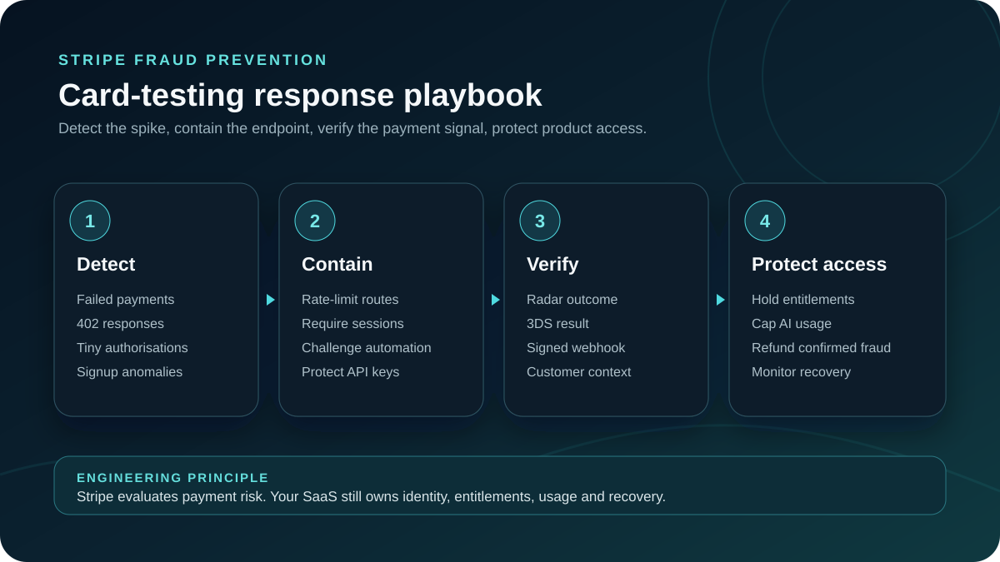

Stripe fraud prevention for AI SaaS must stop more than a suspicious payment. It needs to catch card testing, stolen-card purchases and repeated trial abuse before attackers consume expensive model usage or generated content.
The practical fix is layered: control automated sign-ups, let Stripe Radar evaluate payment risk, use 3D Secure when the risk justifies it, activate paid access only from verified webhook events and enforce product-level usage limits after checkout.
Stripe published new data on September 15, 2026 showing why this deserves attention. AI startups on Stripe faced up to 4.3 times the attempted transaction fraud rate of startups overall in Q3 2025. Stripe also reported a 40% increase in attempted multi-account abuse across AI subscription companies between January and June 2026. These are Stripe network figures, not a prediction for every product, but they show that payment security and product usage controls must be designed together.
This guide explains the architecture I would use for a self-serve AI SaaS product. It covers account checks, Stripe Radar, 3D Secure, verified webhooks, subscription entitlements, usage limits, monitoring and testing. The goal is not to block every unusual customer. It is to make abuse expensive while keeping checkout simple for legitimate users.
Why Stripe fraud prevention for AI SaaS is different
Traditional payment fraud usually focuses on whether a transaction is genuine. AI SaaS adds another valuable asset: immediate access to compute, model calls, generated media, data enrichment or automated workflows. That access can be consumed or resold before the real cardholder notices the charge.
The customer lifecycle therefore contains several separate risks:
- Card testing: automated attempts use your payment form to discover which stolen card details still work.
- Transaction fraud: a stolen payment method purchases a subscription or prepaid credits.
- Multi-account abuse: one actor repeatedly creates accounts to collect free trials, credits or promotional limits.
- Account sharing: many people or locations use one paid account beyond the intended plan.
- Usage abuse: a valid payment buys access, but automation consumes resources at a rate that destroys the unit economics.
Stripe's analysis of fraud at AI startups describes the same shift from payment-only fraud toward customer-level abuse. Radar can evaluate payment risk, and Stripe is expanding account-abuse signals, but the SaaS application still owns identity, entitlements and resource consumption.
Build protection across the complete customer journey
I would not place one fraud check at checkout and consider the problem solved. A stronger design creates several small controls from registration through ongoing usage. Each layer has a narrow job, which makes false positives easier to understand and the system easier to adjust.
1. Control automated sign-ups before billing
Rate-limit registration and verification endpoints by a combination of account, network and device signals. Verify the email address before granting valuable credits. If a trial includes costly AI generation, start with a modest allowance and increase it after the user completes meaningful setup or adds a valid payment method.
Do not depend on an IP address alone. Shared offices, mobile networks and VPNs can make good customers appear related, while attackers can rotate addresses. Use several signals and keep a manual review path for valuable accounts that are unusual but legitimate.
2. Use a Stripe-hosted or recommended payment integration
Stripe explains that its recommended integrations provide the signals and automated protections used to identify card testing. Stripe Checkout or the Payment Element is usually a safer starting point than a custom form that sends limited payment context. Collect the normal customer and billing information required for the transaction, but do not collect unrelated personal data merely because it might be useful later.
Create one PaymentIntent for one checkout attempt or business session. Attach your internal account identifier as non-sensitive metadata so payment events can be reconciled with the correct tenant. Never place API keys, access tokens or confidential customer data in Stripe metadata.
3. Let risk determine additional authentication
3D Secure can move a risky card payment through issuer authentication, but forcing a challenge on every customer adds friction. Stripe recommends allowing its authentication and risk systems to request 3D Secure automatically in most cases. Custom Radar rules can request it for specific risk patterns when the data supports that decision.
The important product detail is to support every PaymentIntent state. A payment can require customer action, remain processing, fail or succeed. The frontend must explain the next step, while the backend waits for verified Stripe events before granting durable access.
Stripe card-testing response plan
A card-testing attack needs an operational response, not only a new Radar rule. Stripe lists common signals including a spike in failed or blocked payments, more API requests returning 402 errors, and low-value attempts with suspicious customer details. Those indicators should alert both the payments owner and the engineer responsible for the checkout or card-setup endpoint.

First 30 minutes: contain the payment endpoint
- Confirm the pattern: compare failed authorisations, Radar blocks, 402 responses, payment amounts, account age and signup velocity with the normal baseline.
- Reduce automated access: rate-limit the affected routes, require a valid server-side session, and add a server-verified challenge where automated requests are bypassing the normal checkout flow.
- Protect access: pause entitlements and valuable AI credits for suspicious accounts until a verified payment event and product checks agree.
- Preserve evidence: keep Stripe object IDs, internal account IDs, timestamps and reason codes. Do not copy full card data into application logs.
Next 24 hours: recover without blocking good customers
| Owner | Action | Evidence to review |
|---|---|---|
| Payments | Refund confirmed fraudulent payments and mark the reason accurately. | Radar outcome, issuer response, dispute or early-warning data. |
| Engineering | Tighten the abused endpoint instead of applying one broad country or IP block. | Route, session, device, account and request-velocity patterns. |
| Product | Adjust trial credits, release timing and high-cost feature limits. | Account age, AI cost, credit consumption and invitation behaviour. |
| Support | Give legitimate customers a clear recovery and review path. | Verified account history and the exact control that stopped access. |
After containment, review whether the integration sends the risk context Stripe documents as useful for card-testing detection, including IP address, customer email, name and billing address. Use only data needed for the payment and fraud purpose. Then test the changed flow in a Stripe sandbox before restoring normal limits.
Activate AI usage from verified Stripe events
In subscription work, I treat Stripe as the source of financial events and the application database as the source of product entitlements. The success page is useful feedback for the customer, but it is not proof that a subscription should be activated. A user can close the browser, reload the page or call a route directly.
A webhook handler should verify the Stripe signature using the raw request body, record the event ID, and process each event idempotently. For recurring subscriptions, events such as a paid invoice, payment failure, subscription update and subscription deletion should move the account through explicit entitlement states.
const event = stripe.webhooks.constructEvent(
rawBody,
request.headers.get('stripe-signature')!,
process.env.STRIPE_WEBHOOK_SECRET!
);
await db.transaction(async (tx) => {
const processed = await tx.stripeEvent.findUnique({
where: { stripeEventId: event.id }
});
if (processed) return;
if (event.type === 'invoice.paid') {
const invoice = event.data.object;
await activateEntitlement(tx, invoice.customer, invoice.id);
}
if (event.type === 'invoice.payment_failed') {
const invoice = event.data.object;
await markEntitlementPastDue(tx, invoice.customer);
}
await tx.stripeEvent.create({
data: { stripeEventId: event.id, eventType: event.type }
});
});The exact event set depends on whether the product uses subscriptions, usage-based billing, prepaid credits or one-time purchases. The invariant is the same: verify the event, prevent duplicate processing and make entitlement changes auditable.
This is especially important when a product has seat-based billing. A plan may be paid while the permitted seat count, organisation and roles are still application concerns. I cover that separation in my Stripe per-seat billing guide.
Connect payment risk to product usage controls
A successful charge should not create unlimited trust. AI usage needs limits that match the plan and the cost model. Track requests, tokens, generated assets or other expensive units at the organisation level as well as the individual user level. Enforce limits on the server, not only by disabling a button in the browser.
For a new or high-risk account, useful controls can include:
- a lower initial generation or API limit;
- a gradual release of prepaid credits instead of the entire balance at once;
- concurrency limits for expensive jobs;
- verification before exporting large datasets or inviting many users;
- a review step before unusually large credit purchases; and
- clear suspension and appeal states instead of silently deleting the account.
These controls should be explainable. Store a reason code when the system limits an account, but avoid exposing detailed detection logic that would help an attacker tune around it. Customer support needs enough context to resolve a false positive without seeing full card data.
Configure Radar from evidence, not guesswork
Radar evaluates payment risk using Stripe's network signals. Custom rules are most useful when they include knowledge specific to the product, such as a high-value credit purchase from a brand-new account. They are less useful when they duplicate broad assumptions that block entire countries, email providers or customer groups without measured evidence.
Start with the default protection, then review Radar outcomes, disputes, declines and customer complaints. Use review rules where uncertainty is acceptable and block rules where the evidence is strong. Measure both fraud caught and legitimate conversion lost. A rule that stops fraud but rejects valuable customers can still be expensive.
Stripe's Radar analytics can show fraud and intervention trends. I would compare those payment metrics with application signals such as trial creation, model cost, credit usage, failed logins and account suspensions. The combined view answers the question that payment data alone cannot: which behaviour is profitable, which is merely unusual and which is abusive?
Test the failure paths before launch
Stripe provides test cards for high-risk payments, blocked payments, disputes and 3D Secure flows. Use them in a Stripe sandbox to verify the customer experience and the backend state transitions. Stripe specifically warns against using the sandbox for load testing, so traffic and rate-limit tests should use your own mocked payment boundary.
A practical test plan should cover:
- a legitimate payment that succeeds immediately;
- a payment that requires 3D Secure authentication;
- a payment blocked by Radar;
- a webhook delivered more than once;
- events arriving in an unexpected order;
- a paid subscription followed by payment failure;
- rapid trial registrations from related signals;
- usage that reaches the plan limit; and
- a manual review that approves or rejects an account.
Monitor webhook failures and retry them safely. Alert on sudden changes in payment failures, 402 responses, tiny authorization attempts, sign-up volume and compute usage. Review the alert thresholds after real traffic arrives; launch settings are hypotheses, not permanent truth.
A practical AI SaaS fraud checklist
- Use Stripe Checkout or Payment Element unless a custom flow has a clear requirement.
- Protect registration, login, trial and payment endpoints with layered rate limits.
- Verify email before granting expensive trial benefits.
- Keep Stripe secret keys and webhook secrets only on the server.
- Verify webhook signatures against the raw body.
- Store Stripe event IDs and process events idempotently.
- Grant entitlements from verified backend events, not redirect pages.
- Allow risk-based 3D Secure instead of challenging every customer by default.
- Enforce plan and usage limits at the tenant boundary.
- Track fraud, conversion, disputes, model cost and account abuse together.
- Provide support staff with reason codes and a controlled appeal path.
- Test blocked payments, authentication, duplicate events and failed renewals.
Practical takeaway
Stripe fraud prevention for AI SaaS is an application architecture problem as much as a payments problem. Radar can screen transactions and surface network-level risk, but your product must control sign-ups, trials, entitlements, seats and expensive AI usage.
The safest approach is layered: reduce automated account creation, use a recommended Stripe integration, let risk trigger authentication, activate access through verified idempotent webhooks, and apply server-side usage limits after payment. Then measure the effect on both fraud and good customers.
If you are building subscription billing, prepaid AI credits or a multi-tenant SaaS product, I can help design the Stripe integration and entitlement model so payment state, product access and operational evidence stay consistent. Tell me what you are building, and I will help map the smallest secure production path.

Written from production experience